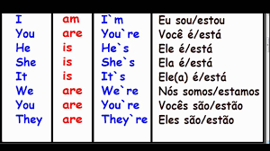

Língua Inglesa
O que é verbo to be e para que servem?
Veroo to be são verbos utilisados na língua inglesa e são traduzidos como ser ou estar.
O que é verbo to be e para que servem?
Veroo to be são verbos utilisados na língua inglesa e são traduzidos como ser ou estar.
Como são utilidados?
O verbo to be é utilizado como uma preposição que junta os pronomes ao adjetivos. Ex: I am a good person.
Quais são os verbos to be?
I am; You are; she is; it is; they are; we are. 